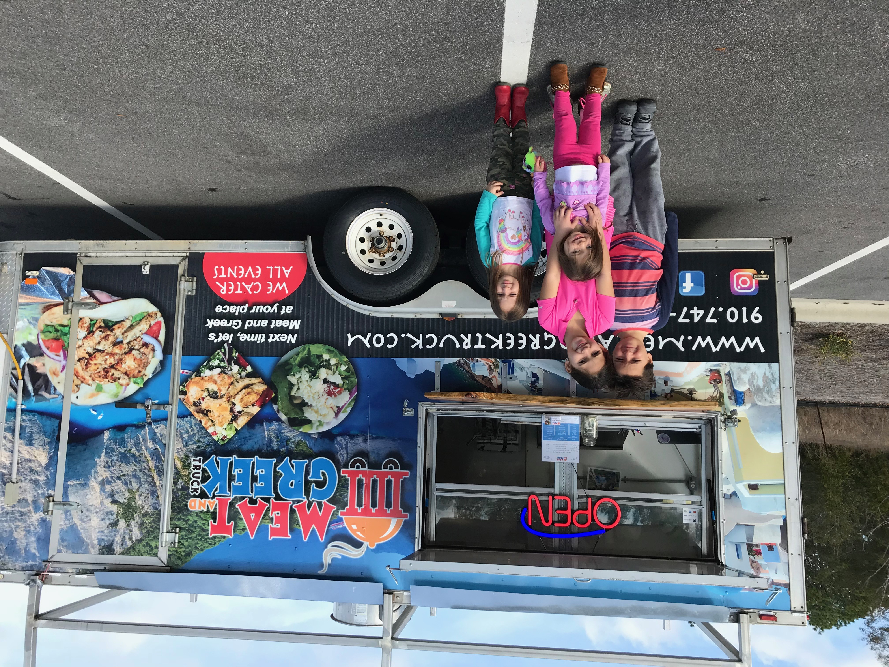

Oresti Arsi was Albanian born and grew up on the Greek isle of Corfu. Tough life, I know. Brittany was a military brat moved to North Carolina who grew up on Southern cooking. They met at Oresti's family restaurant Corfu and from the first date forward, were rarely apart. They enjoy and thrive working together which led to many entrepreneurial adventures, the recent of which is The Meat and Greek Truck.
After building their family to a solid six, the Arsi family decided to hold out on doing another restaurant in leiu of something with more flexibility for golf lessons and art meets. So they decided to open a food truck and serve their crafty cuisine out of their mobile kitchen on the go and at their choosing! The perfect set up for an always busy family. The business has since grown in popularity since its opening in November and is booked out in advance for most weekdays and some weekends. They happily do caterings, weddings, festivals and private parties as well as corporate events around North and South Carolina.
Often on the weekends, you can catch a peek at the Arsi children learning the way of the small businessman as they assist on the truck handing out drinks or assisting in cooking. Other times, they will simply "help the customers by keeping their kids happy while playing with them." As the son of the Arsi family will say.
